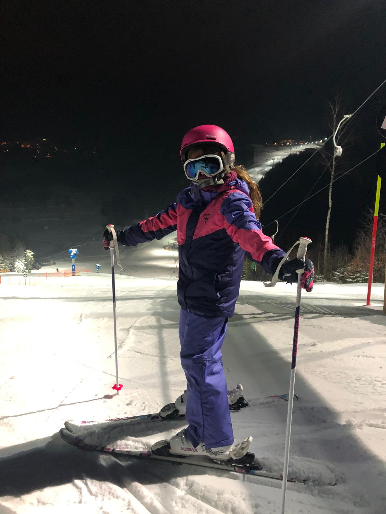
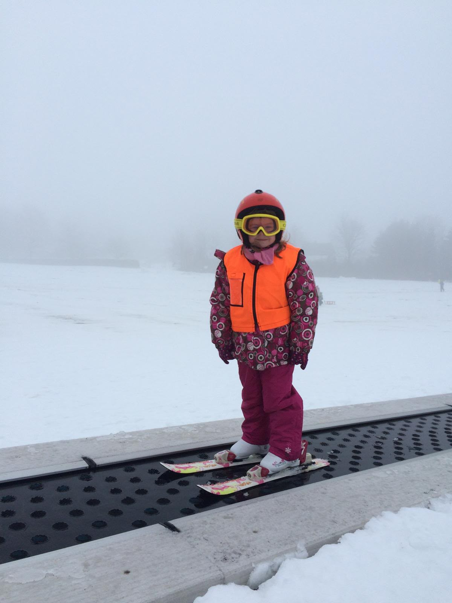
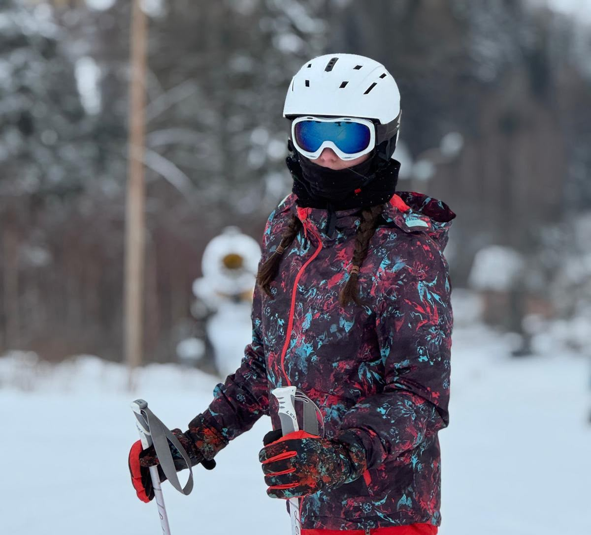

Willkommen auf meiner Website!
Auf dieser Website geht es um mein Hobby Skifahren. Ich stehe schon seit meiner Kindheit auf Skiern und verbinde damit viele schöne Erinnerungen.
Ich war mit meiner Familie im Skiurlaub, habe an Skikursen teilgenommen und war auch bei einem Skilager dabei. Besonders gerne erinnere ich mich an die gemeinsame Zeit auf der Piste und an die Erlebnisse im Schnee.
Meine Erinnerungen auf Skiern
Auf der nächsten Seite findest du einige Fotos aus verschiedenen Jahren.


